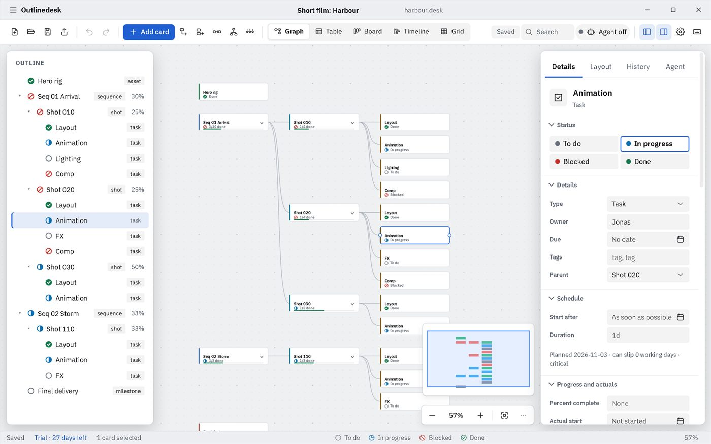
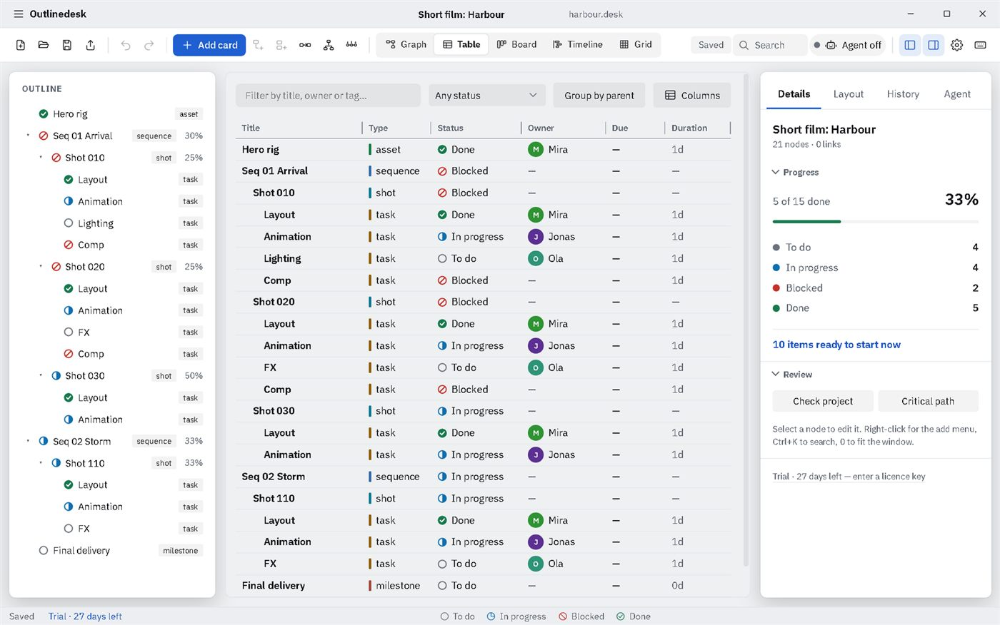
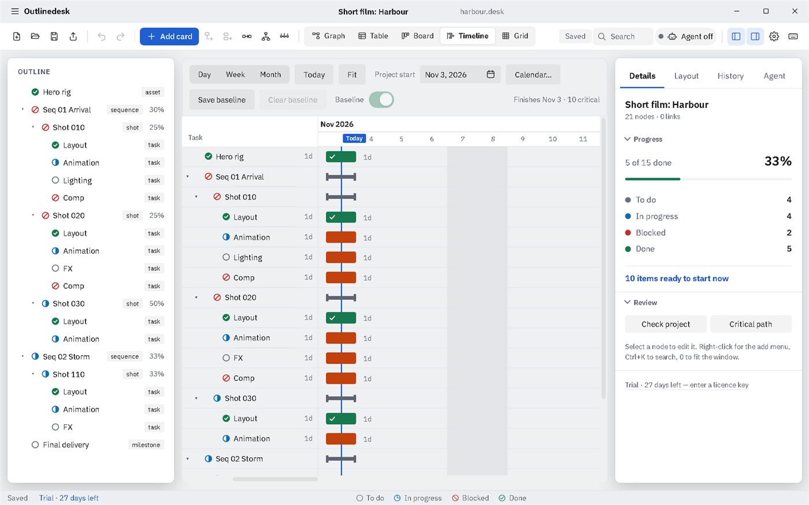
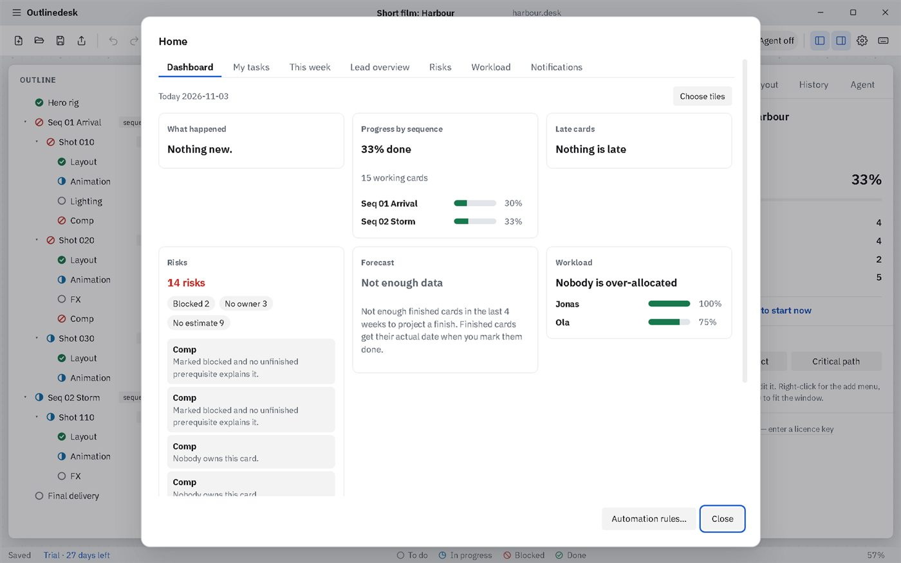

A real dependency graph
Link cards to show what waits on what. Progress rolls up the tree, blocked work is flagged, and the critical path shows what decides your delivery date.
For animation, VFX and game studios
Outlinedesk is a desktop planner for assets, sequences, shots and tasks. You say what waits for what, and it works out the dates, the critical path, progress and risks for you. Your project is one file on your disk.
Start the 27-day trialSee pricing
Windows and Linux · ₹149 a month after the trial




Make a card for each asset, sequence, shot and task. Give it a length in days and an owner.
Connect Animation to Layout and it knows Animation cannot start first. These links are called dependencies.
Dates, the critical path, progress and late or blocked work are calculated for you. Change a length and every date after it moves.
| Excel or Sheets | Outlinedesk | |
|---|---|---|
| Dates | Typed by hand, wrong after the first slip | Calculated from lengths, links and your working calendar |
| What blocks what | Kept in someone's head | Drawn as links, with blocked work flagged |
| Progress | Formulas you maintain | Rolls up from shots to sequences to the whole project |
| Two people editing | One overwrites the other | Changes merge, and clashes are listed |
| History | None, unless you copy the file | Undo, versions and a recovery area |
| Where it lives | Your files, or a cloud account | Your own files, offline, no account |
It reads and writes Excel files, so you can start from the sheet you have today.
Link cards to show what waits on what. Progress rolls up the tree, blocked work is flagged, and the critical path shows what decides your delivery date.
Graph, Table, Board and Timeline show the same cards. Drag a bar on the Gantt and the graph updates; selection follows you between views.
One project file on your disk with atomic saves, automatic backups and crash recovery. Your project data never leaves your computer.
Attach scene files from any app (Blender, Maya, Nuke, Houdini, After Effects, Photoshop, USD) to cards. A Blender add-on works today, and folder watching links new versions for you.
Export CSV, JSON and Markdown an assistant can reason about, or let agents edit the plan through a local-only connection (MCP).
Send an interactive offline HTML copy. Reviewers add comments in their browser; you import them back onto the right cards.
A 27-day trial of everything. When a plan ends, Outlinedesk becomes read-only: every project still opens and exports. Your work is never held hostage.
Freelancers and small studios of 3 to 20 people who plan shows, shots and tasks and don't want another per-seat cloud tracker. If you need live multi-user editing in a browser, a cloud tracker is the better tool.
₹149 a month
One person. ₹1,599 a year.
₹1,999 a month
Up to 8 seats. ₹21,999 a year.
₹299 a year
One verified student, launch price.
The first 27 days are free and include everything. Import the sheet you use today and see your real dates.